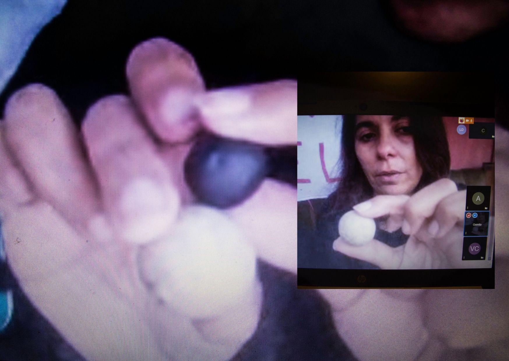

Maxi (25) como le dicen sus cercanos, vive en El Monte, en la provincia de Talagante. Antes de convertirse en un preso político, trabajaba y estudiaba, hoy el arresto domiciliario le impide hacer su vida con normalidad. Hace varios años, es activista medioambiental, junto a su madre: Gemita, una mujer de fuerza y convicción increíble, que al igual que él ha sufrido las repercusiones de su privación de libertad y se ha sumado a la Organización de Familiares y amigxs de lxs presxs políticxs (OFAPP). A través de una videollamada — que a ratos se corta — ambos conversan sobre su proceso. Mientras que en el frontis de la casa, hay colgado un lienzo que dice “Libertad a lxs presxs de la revuelta”.

“La mayoría de los chicos que estamos presos, hemos estado bajo detenciones totalmente ilegales. Mi detención también lo fue. Pero por el hecho de haber sido ley antiterrorista, ya uno no puede alegar nada. Entonces, al final no hay igualdad en ningún sentido, en la justicia. Para nadie y menos para los jóvenes que están por la revuelta”. manifiesta César.
Era la noche del 22 de noviembre de 2019. La calle ya estaba vacía. Él estaba a una cuadra de su casa, cuando apareció una patrulla de Carabineros por detrás. César corre, pero lo detienen. Lo tiran al suelo, lo golpean y lo amenazan: “me dicen que me van a quemar, que me van a matar, que me van a torturar, que "cagaste" y tirándome unas patadas y garabatos. Yo pensé que me iba a pasar algo, porque nadie vio que me detuvieron”.
Pero no fue así, por suerte una amiga vio su detención y avisó a su familia y amigues. Fueron todes a la comisaría a esperarlo. Cuando los efectivos policiales se dan cuenta, le dicen "te salvaste flaco culiao, no te vamos a torturar".
Persecución Política
El día que detuvieron a Cesar, no fue la única vez que sintió que estaba siendo objeto de ella. Él y su madre son activistas por la defensa de los territorios desde hace años. Han luchado incesantemente por el río Mapocho y en contra de la extracción de árido en las cercanías de la comuna El Monte. “Ahí yo quiero hacer un alcance, hay una diferencia de nosotros con otras familias, porque nosotros somos una familia activista medioambiental, entonces ustedes saben lo que significa ser activista en este país”, señala Gemita.
El año 2016, él y su familia tuvieron un incidente con un candidato local del partido de derecha Unión Demócrata Independiente (UDI). César es artista callejero y fue a trabajar al semáforo, cuando se encuentra con su comando político, elles lo increpan, golpean y roban sus pertenencias. El joven los denuncia ante Carabineros, pero no obtiene respuesta y acusa que en esa oportunidad, funcionarios de esta institución, golpearon a su madre y le dejaron secuelas en el brazo. Ella es artesana y hasta el día de hoy tiene dificultades para manipular cosas con su mano derecha.
“El estallido social pone en evidencia algo que ya estaba pasando y en las provincias lo sabíamos", señala Gemita.
Las consecuencias de esta persecución política, según César, también se evidencia en que “aquí de repente, mucha gente dejó de marchar después de que me detuvieron, entonces como que igual eso es lo que buscan al final, meter miedo no más po”.
Las madres también son presas políticas
Cuando un familiar cae preso, la familia lo resiente, aunque sea en arresto domiciliario. Así es el caso de Gemita, madre de César, quien al igual que él ha sufrido las consecuencias de la prisión política.

Ella encontró vía facebook a la Coordinadora 18 de Octubre, organización que ha visibilizado la prisión política en Chile, tras la revuelta. Cuando estaban armando un catastro de las familias de las y los presos de la revuelta. Les contactó sin mayores expectativas. En ese momento se sentían solos y con sus redes disminuidas. Su sorpresa fue tal cuando llegaron a su casa dos días después de que les escribió.
“Llegó una terapeuta floral que es la que me contuvo… imagínate como estaba emocionalmente”, señala Gemita. En esa oportunidad también fue un médico que le revisó unas heridas en la pierna a César, que resultaron ser perdigones incrustados. Al momento de la entrevista, aún los tenía y le dificultaban caminar.
Gemita menciona que uno de los objetos significativos en este proceso de lucha y arresto domiciliario, son justamente los perdigones: “lo único que estábamos haciendo era demandar por los ríos, los cerros, y empezamos a juntarlos, porque sabíamos que estábamos haciendo historia. Que en algún minuto iba a ser utilizado, nos iba a servir para graficar la lucha. Eso es lo que nos recuerda que hay que seguir luchando hasta el final, no importa lo que nos pase, porque no puede volver a pasar, no se puede volver a usar esto (muestra el perdigón y la pelota), contra un hermano, contra una hermana”.

A la semana de la visita, la madre ya estaba en una reunión con las demás familias de les preses polítiques. De ese grupo nace la Organización de Familiares y Amigxs de lxs presxs políticxs (Ofapp). Ella comenta que Ofapp y la Coordinadora 18 de Octubre, son como mamá e hije.
Para finalizar César advierte que “yo creo que todos los que están en este momento como presos políticos, que han caído por marchas, es por lo mismo: por defender la vida porque estamos conscientes de que necesitamos agua para vivir; porque estamos conscientes de que no podemos seguir coexistiendo en esta sociedad así como va; porque es un consumo sin límite y no va a parar. La desigualdad solo ha crecido”.